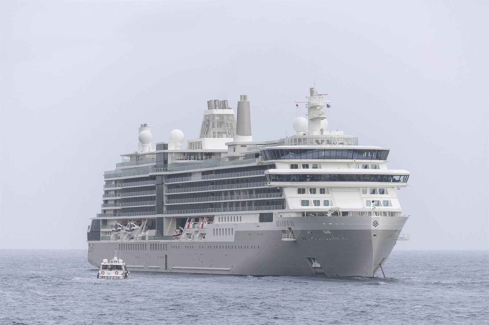

Segundo navio da Nova Class, o Silver Ray leva para a operacao regular da Silversea a mesma proposta assimetrica, aberta ao mar e fortemente conectada ao destino que estreou no Silver Nova.

O Silver Ray foi construido pela Meyer Werft, em Papenburg, Alemanha, como o segundo exemplar da Nova Class da Silversea. A entrega oficial aconteceu em 14 de maio de 2024, e a estreia comercial veio logo depois, com viagem inaugural saindo de Lisboa em 15 de junho de 2024.
Assim como seu irmao Silver Nova, o navio aposta em arquitetura assimetrica, grandes superficies envidracadas e uma distribuicao horizontal dos espacos publicos. O objetivo e reduzir a sensacao de separacao entre interior e exterior, aproximando os hospedes do mar e dos destinos visitados.
A bordo, a proposta mistura o DNA all-inclusive da Silversea com a nova geracao da marca: servico de mordomo em todas as suites, programa gastronomico S.A.L.T., Otium Spa, areas externas mais abertas e venues criados para aproveitar melhor luz natural, vistas laterais e circulacao ao ar livre.